Välj en månad på hjulet. Bilden i mitten byter årstid och kartan nedanför visar var på Vreta den månaden lever.
Allt är öppet för allmänheten och fullbokat till sommaren 2027. Följ året här, sidan följer månaderna.
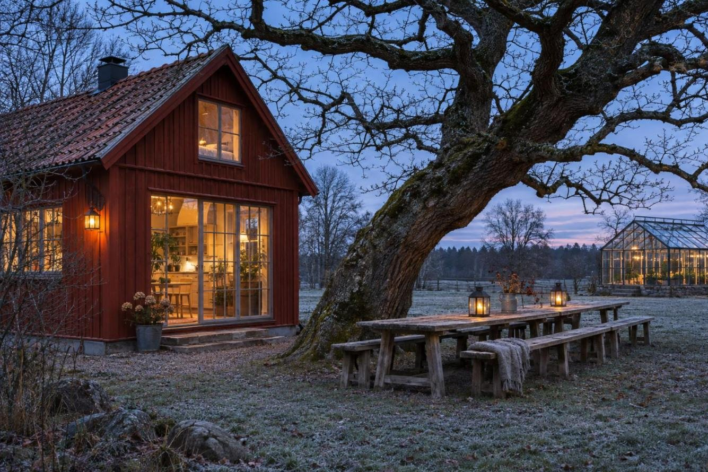
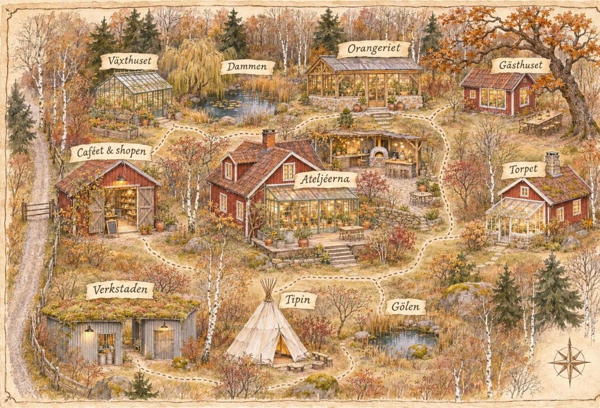
AI45 kvm med öppen spis i granit och två uteverandor under tak.
Klicka på en plats på kartan. Illustrationer: Generated by AI, Directed by MS
Tre av platsens rum, så som de ser ut i höst.
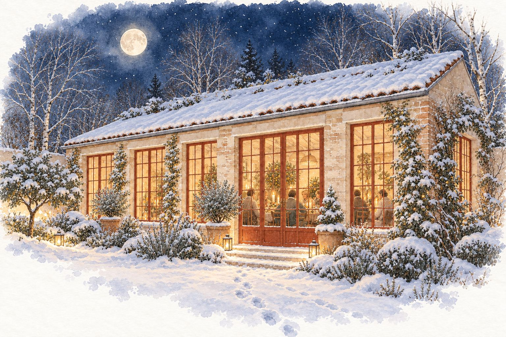
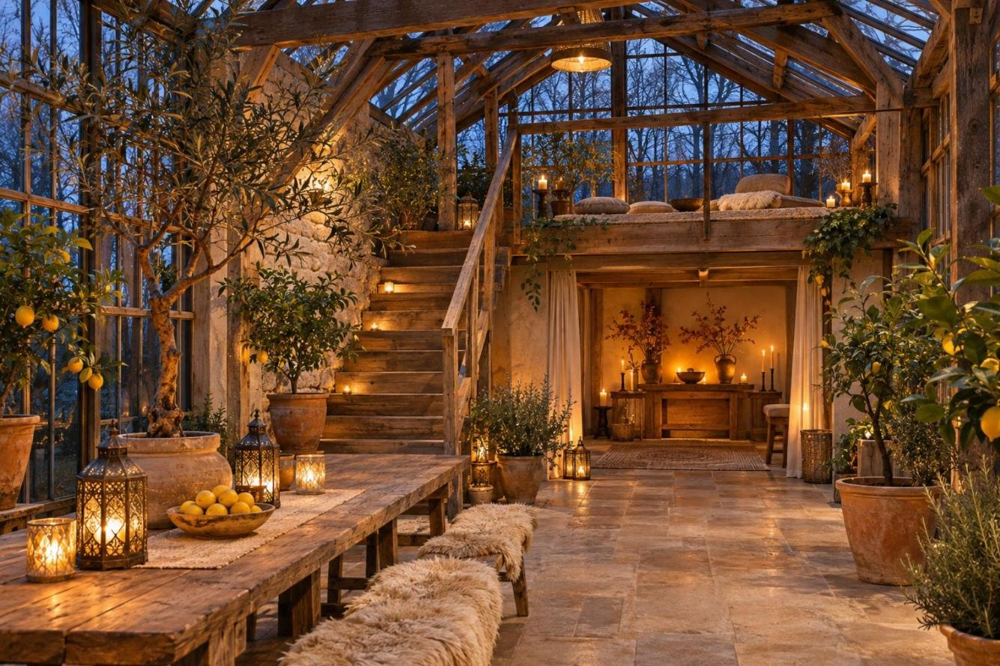
Loftet med meditationsrum i orangeriet på nordsidan. Nedanför finns kök och två rum, varav ett altarrum.
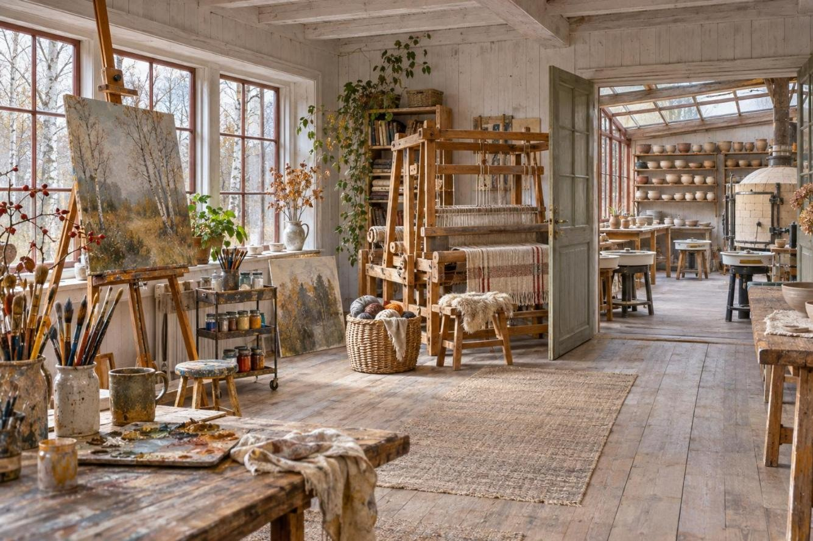
Målarstudio, sömnadsstudio med vävstol och den inglasade keramikstudion med stora ugnen.
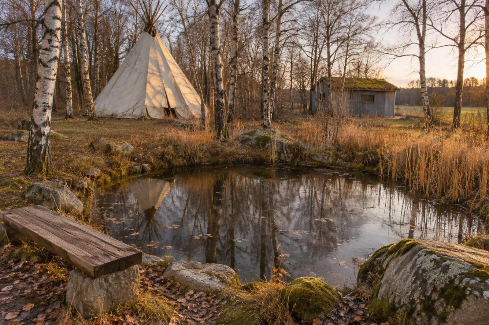
I söder, mellan verkstaden och gölen. Rymmer 40 personer.
Allt är fullbokat till sommaren 2027, men året går att följa. Lägg Vretas dagar i din egen kalender, så påminns du när ljusen tänds, när marknaden öppnar och när nästa varv börjar.
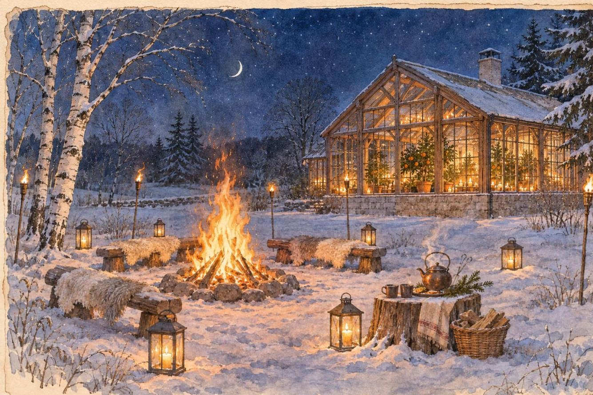
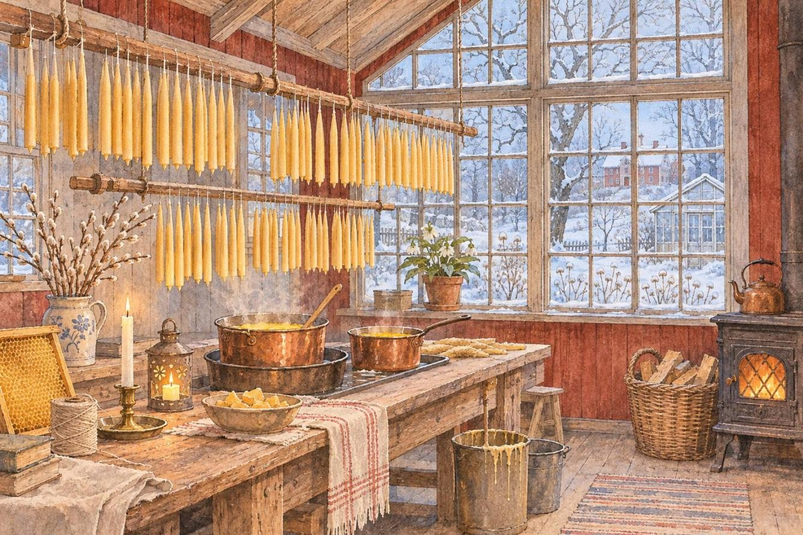
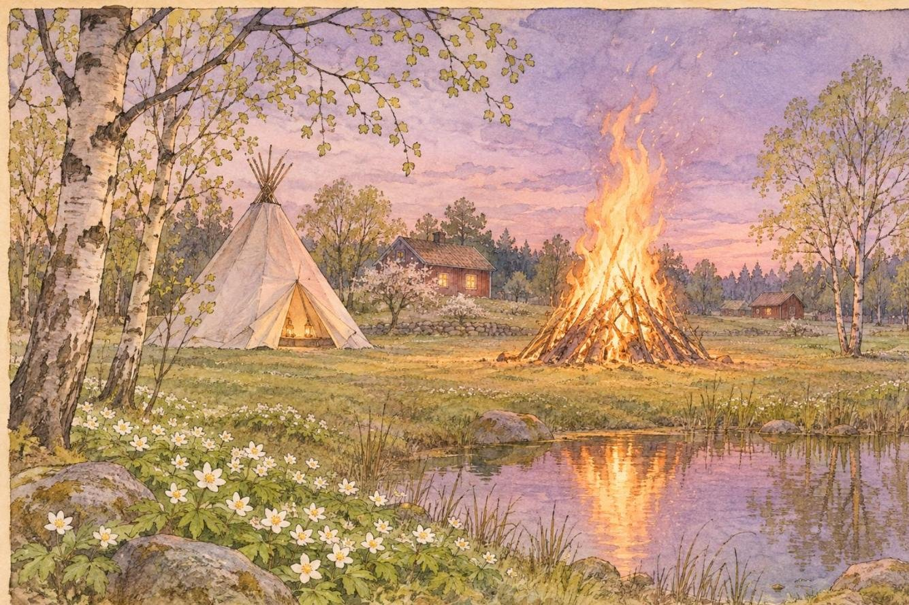
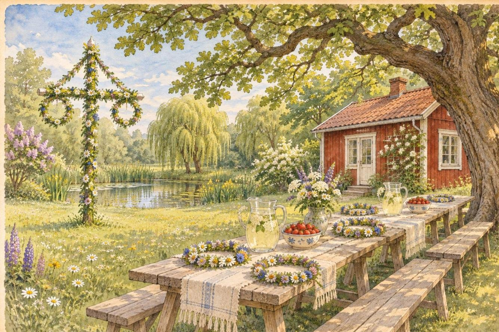
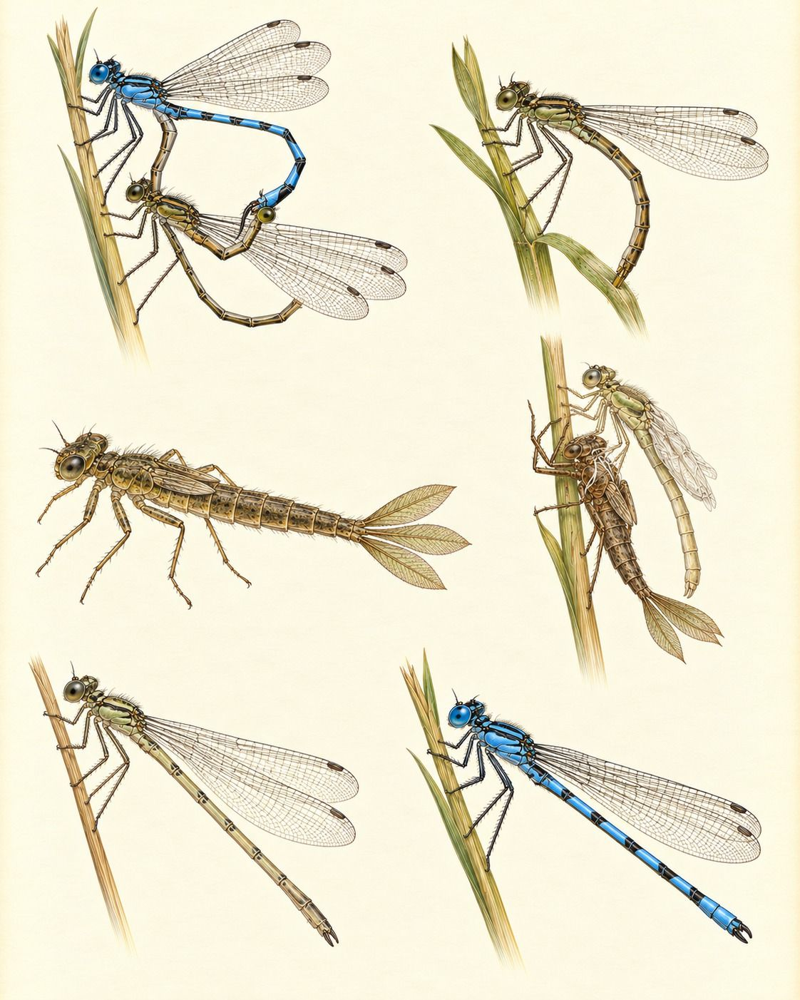
”Vi vill bidra till mer liv än vi tar i anspråk.”
Vreta Solglänta är en plats under uppbyggnad utanför Uppsala, där Vreta Regenerative Initiative bygger om, odlar och samlas genom året. Bakom står Mattias Seger. Ombyggnaden pågår, och sidan växer med platsen.
Alla aktiviteter är öppna för allmänheten och fullbokade till sommaren 2027. Egen mat och fika är välkommen. Hundar hålls kopplade, utom Freja. Vi ses på nästa varv.